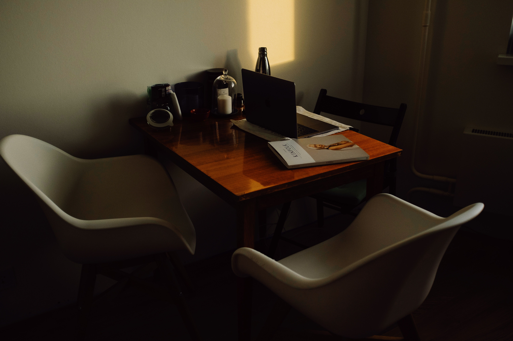
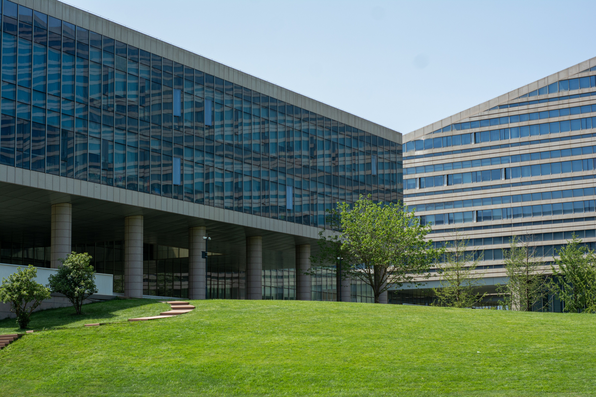
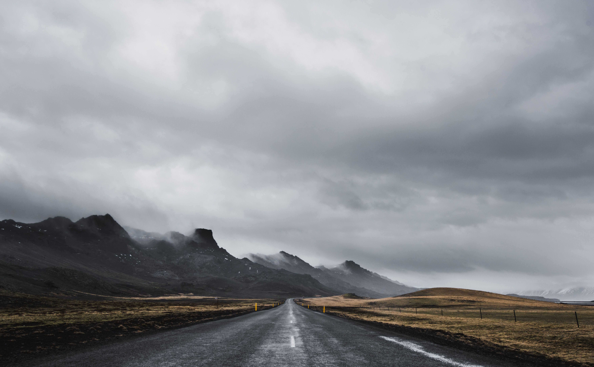
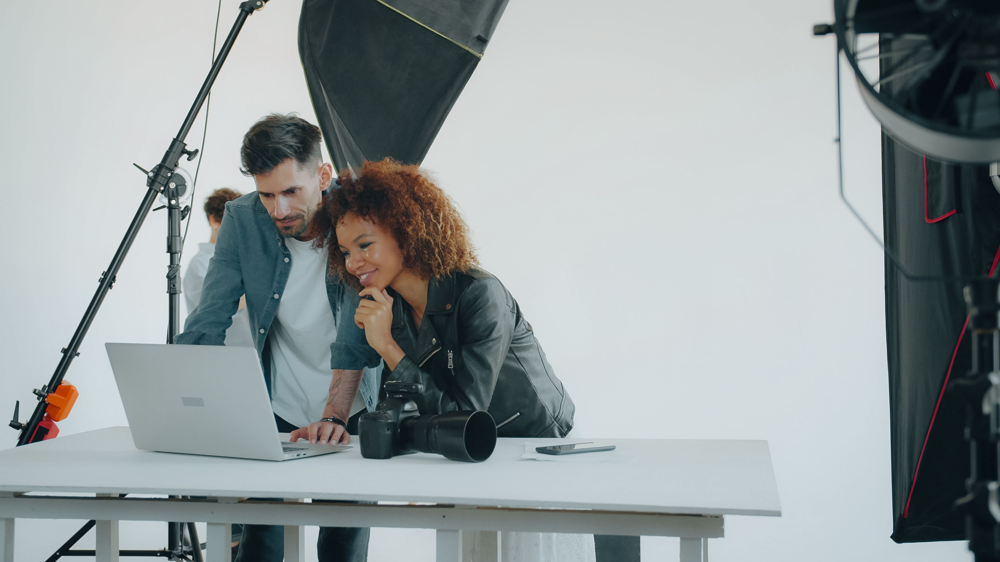
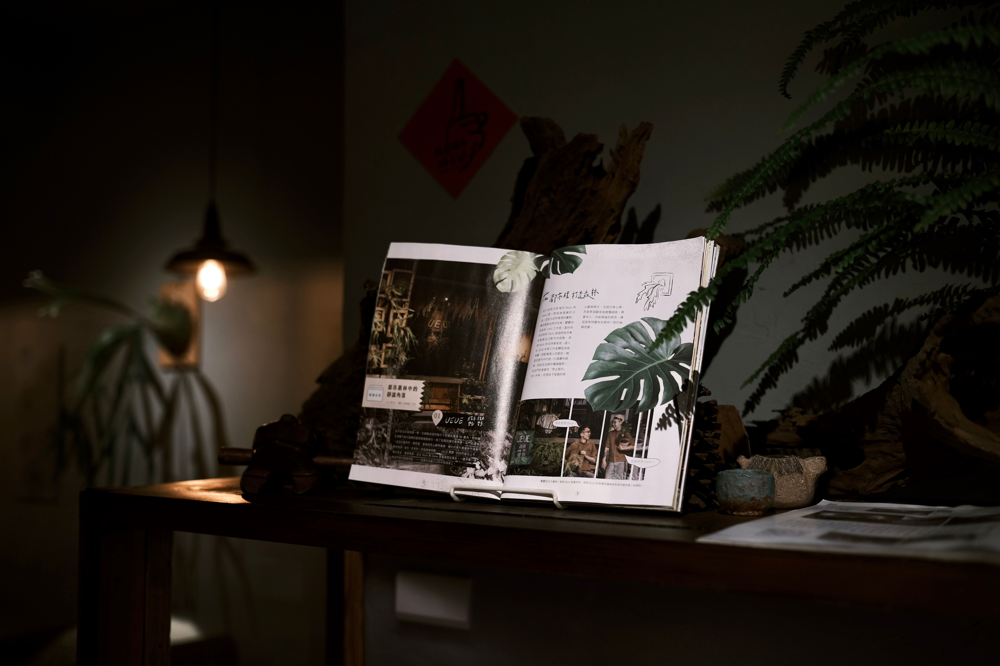
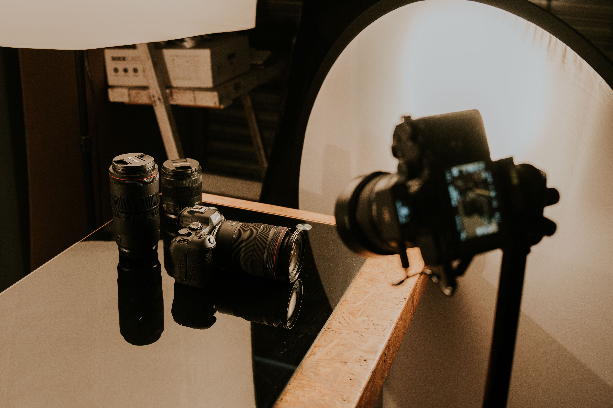
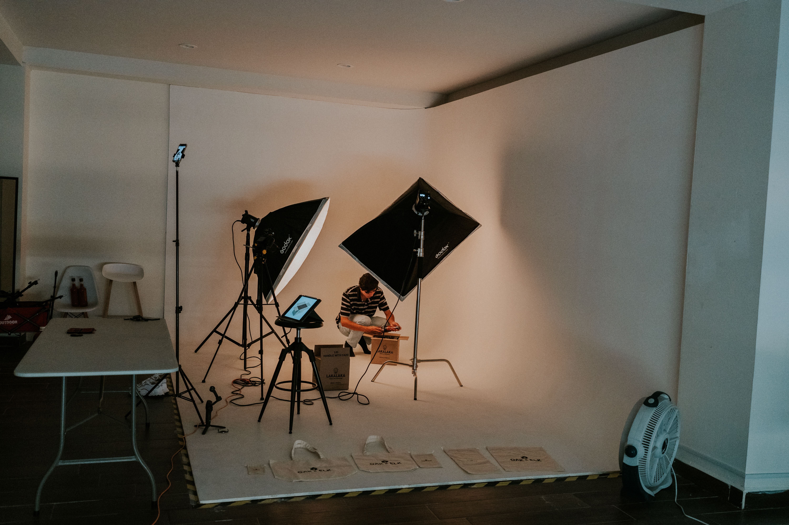

Foto & Visual
Foto & Visual
Foto & Visual
Keramik & Peralatan Meja
Pemotretan produk dengan cahaya lembut untuk menonjolkan tekstur glasir dan bentuk meja makan.
Terdiri dari 5 proyek Foto & Visual, 5 proyek Video & Konten, serta 5 proyek Katalog & Web.
Disusun dalam tiga kategori utama agar mudah ditelusuri sesuai kebutuhan proyek.
Menampilkan visual produk, ruang studio, serta sampel video dengan pemuatan ringan di perangkat.
Contoh tata letak katalog digital, halaman layanan, dan antarmuka situs responsif.
Foto & Visual
Pemotretan produk dengan cahaya lembut untuk menonjolkan tekstur glasir dan bentuk meja makan.
 Foto & Visual
Foto & Visual
Pemotretan sajian minuman dan suasana ruang dengan pencahayaan alami yang hangat.
 Foto & Visual
Foto & Visual
Fokus pada serat bahan, lipatan alami, dan warna netral yang menenangkan.

Foto & VisualKomposisi penataan meja yang rapi dan seimbang untuk kebutuhan katalog produk.

Foto & VisualPengambilan gambar resmi untuk profil lembaga, aktivitas lapangan, dan publikasi.

Video & Konten ▶ Sampel VideoCuplikan perjalanan dan suasana luar ruang dengan komposisi gambar yang stabil.

Video & Konten ▶ Sampel VideoCuplikan profil singkat untuk memperkenalkan identitas dan suasana kerja secara ringkas.
 Video & Konten
▶ Sampel Video
Video & Konten
▶ Sampel Video
Cuplikan video promosi singkat untuk menonjolkan keunggulan produk atau layanan.

Video & Konten ▶ Sampel VideoCuplikan visual proses penyeduhan dengan pencahayaan hangat dan detail gerakan.

Video & Konten ▶ Sampel VideoCuplikan suasana ruang studio dan penataan visual selama sesi produksi berlangsung.
 Katalog & Web
Katalog & Web
Struktur halaman utama dengan navigasi jelas, ringkasan layanan, dan ajakan tindakan terarah.
 Katalog & Web
Katalog & Web
Penyajian daftar item berbasis kartu dan filter kategori agar pengunjung cepat menemukan pilihan.

Katalog & WebTampilan perbandingan paket layanan yang terhubung langsung ke formulir pemesanan kontak.
 Katalog & Web
Katalog & Web
Antarmuka modal untuk memutar cuplikan video dan melihat detail informasi proyek tanpa pindah halaman.
 Katalog & Web
Katalog & Web
Penyesuaian menu navigasi, jarak elemen, dan ukuran huruf agar tetap nyaman diakses lewat ponsel.
Pesan layanan satuan di halaman Layanan atau pilih paket bundling di halaman Paket sesuai kebutuhan proyek Anda.